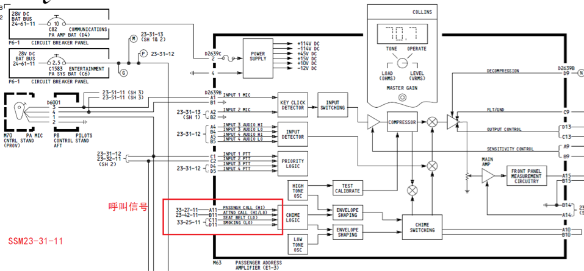
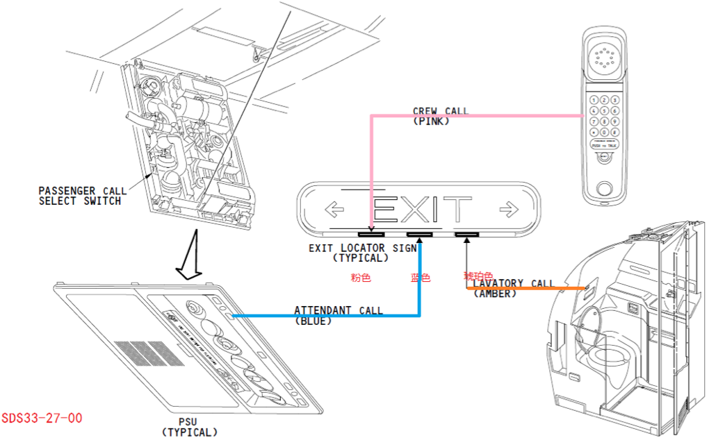
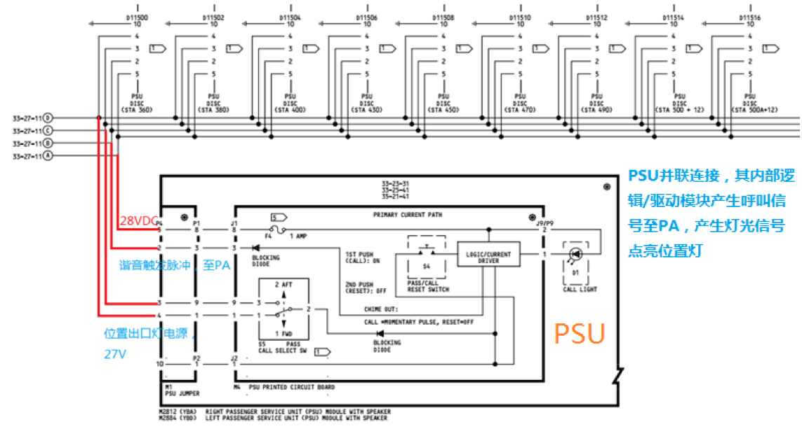
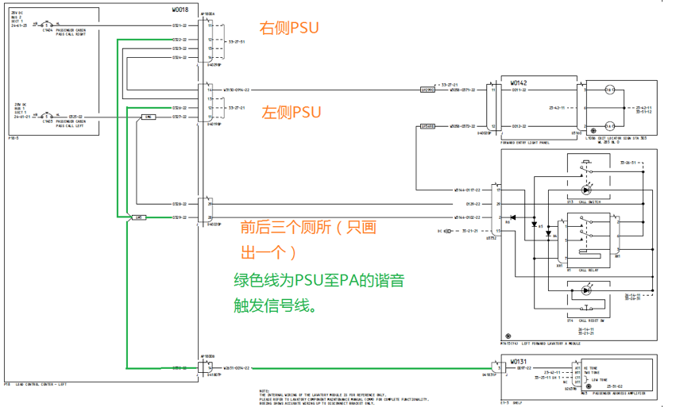
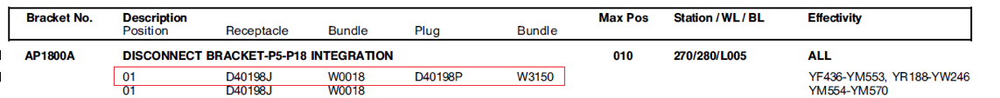
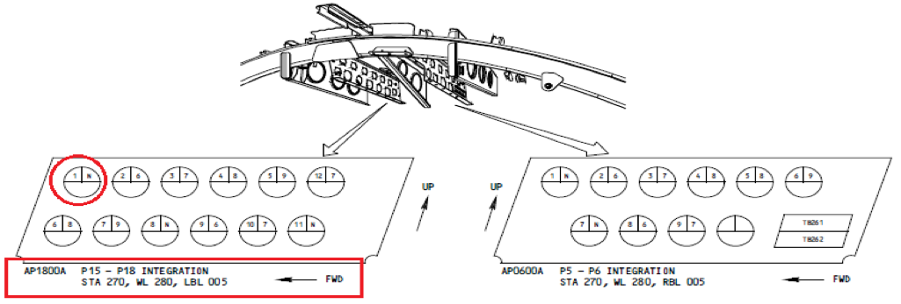

客舱呼叫铃声故障
背景
12月6日，B-7085飞机北京过站机组反映旅客呼叫时客舱没有谐音提示，复位PA放大器跳开关无效，过站依据MEL25-10放行飞机。
重庆航后排故串件PA放大器，REU故障没有转移，办理故障保留待进一步排故。
最终青岛航后量线确认25ABC PSU失效,更换该PSU后故障排除。
与之前故障不同的是此次是全部PSU呼叫均没有谐音，量线过程有很多值得学习的地方。
概述
旅客呼叫系统通过产生谐音与灯光指示告诉乘务员旅客需要服务。PA放大器产生谐音，前后出口位置灯产生相应灯光指示。旅客可以在座椅上按压PSU ATTEND呼叫开关呼叫乘务员，或在厕所按压呼叫开关，客舱产生一声高谐音，出口位置牌上蓝灯、琥珀色灯点亮。
谐音信号
PA放大器内部谐音电路接受呼叫信号产生相应谐音，谐音信号与音频信号同时送到PSU内扬声器。
- 高谐音：在PSU或厕所呼叫乘务员
- 低谐音：禁止吸烟/系好安全带
- 高/低谐音：从驾驶舱呼叫乘务员或乘务员之间呼叫

灯光指示
飞机上有两个出口位置牌，分别位于前后客舱顶板，出口位置牌上有三个白炽灯灯，灯罩分别为粉色、蓝色、琥珀色。
- 蓝灯亮：旅客使用PSU呼叫乘务员
- 琥珀色灯亮：旅客在厕所呼叫乘务员
- 粉色灯亮：机组之间呼叫或驾驶舱呼叫乘务员。
头等舱和前厕所呼叫时前出口位置灯亮，经济舱和后厕所呼叫时后出口位置牌灯亮。驾驶舱呼叫时都亮。这由PSU中的一个拨扭开关选择。

信号输入
PSU并联连接，原理图如下,按下呼叫开关S4，PSU上呼叫灯亮，再次按下呼叫开关，呼叫灯熄灭。

PSU逻辑/电流驱动模块提供27VDC至前或后出口位置牌（根据S5位置），出口位置牌上蓝灯亮。若多名旅客按压呼叫按钮，需要在每个PSU上都进行复位，才能使出口位置牌蓝灯熄灭，只要有一个PSU没有复位，其输出的28V直流使蓝灯常亮。
PSU产生的谐音触发信号为 27V,持续时间90-200ms的脉冲 ，PA收到此脉冲后产生一声高谐音至PSU扬声器。
排故思路
通常由于震动造成某个PSU电插头松动接触不良，谐音触发脉冲信号或位置灯高电平没有发送到PA或前后位置出口灯，使得在该位置出PSU呼叫时没有灯光指示，因为PSU是并联连接，某一PSU失效不会影响其他位置PSU功能，重新紧固电插头即可。此次B-7085飞机故障现象是所有位置PSU呼叫时均没有谐音指示，灯光指示正常。首先怀疑PA放大器故障，串件后故障没有转移,排除PA可能性。
量线
先看上图PSU电插头四个插钉含义：pin 5为28V电源，pin2输出谐音触发脉冲，pin3、4输出电压点亮出口位置牌蓝灯。没有谐音首先猜想pin2至PA之间线路出现了短路或断路情况，谐音触发信号没有发送过去或被抑制。如果断路，那么断点前的PSU是可以正常工作的，这次故障是全部的PSU无法工作，排除断路的可能，我们的排故思路是找pin2对地短路了？

- 拆下PA，脱开3DEF PSU（随机找一个PSU）测量PSU pin2至PA D2639B A11钉通断情况，在使用跳线将PSU 2号钉接地的过程中产生火花，说明2号钉带电，测量2号钉电压为28V。这里存在一个疏忽—带电操作，我们知道不能使用万用表测量带电电阻的，一个是阻值测量不准确，再者容易产生跳火危险。不过这也从侧面排除了pin 2短路接地了，如果对地短路的话，那是不可能带电的，这时需要调整思路即找pin2上电压来源，我们知道正常pin2这条线是不带电的（即使有信号-200ms的脉冲，万用表也是测不出来的）这一步需要注意测量电阻时一定要先断电，这里疏忽了因28V电压低，只出现了跳火，如果高电压要特别注意。
- 判断此28V电压来源，由上图看出pin2钉与电插头D40220P/D40198P/D40298P pin12相连，首先脱开D40220P,测量2号钉电压仍为28V，排除厕组件短路的可能。再脱开D40198P，测量2号钉电压为0，正常2号钉为0点位，那么pin2上的电来自左侧PSU，于是猜想是左侧PSU短路输出28V电压抑制了呼叫触发信号？下面验证这一猜想，保持D40220P、D40198P脱开，装上PA放大器按压右侧PSU呼叫按钮，谐音工作正常。将D40220P、D40198P恢复，故障再次出现。说明设想正确，问题出现在左侧某个PSU。
- 那么现在的排故思路是依次脱开左侧PSU，逐一隔离（每次脱开一个PSU测试一次）。最终确定25ABC PSU内部短路，其输出的28V高电平抑制了呼叫脉冲，更换该PSU后故障排除。
排故经验总结
通过上面排故过程，今后遇到此类故障可按下面思路排故：
拆下PA，在电子舱测量D2639B A11钉电压，若存在28V电压，说明某一个PSU短路，那么依次脱开D40198P、D40298P，测量一次电压，隔离问题在左右哪侧。脱开D40198P，如果电压还存在，那么左侧PSU排除；在脱开D40298P，测量依次电压，如果电压消失，那么右侧PSU存在问题。
若测量D2639B A11钉电压电压为零，那么可能是pin2总线上某处对地短路，断开电源，测量D2639B A11对地电阻，正常为所有PSU对地电阻的并联。
如果故障现象是某一排之后PSU呼叫没有谐音吗，那么我们排故时首先考虑该排PSU处存在断路。
上面排故时分别脱开了D40220P、D40198P，那么这些这些电插头在飞机上哪个位置？介绍下电插头位置查询方法。
依据WDM33-27-11，D40198P位于脱开支架AP1800A
参考WDM91-04-00, D40198P位于脱开支架AP1800A上编号为01孔，AP1800A站位为

参考WDM91-04，找到AP1800A，然后找到D40198P电插头。

根据站位描述，其位于驾驶舱顶板处。
其他
除了旅客呼叫有谐音灯光指示外，可以在下面位置呼叫乘务员，相应指示如下：
- 机组呼叫乘务员
按压P5 ATTEND呼叫开关，客舱产生高/低谐音，前后出口位置灯粉色灯亮 - 旅客呼叫乘务员
在PSU位置呼叫，客舱产生高谐音，出口位置灯蓝灯亮（头等舱前出口位置灯亮，经济舱后位置灯亮）
在厕所呼叫，客舱产生高谐音，出口位置灯琥珀灯亮（头等舱前出口位置灯亮，经济舱后位置灯亮） - 乘务员呼叫乘务员
使用手提电弧呼叫（5），客舱产生高/低谐音，相应出口位置灯粉色灯亮 - 乘务员呼叫机组
驾驶舱高谐音（音响警告组件），P5呼叫灯亮